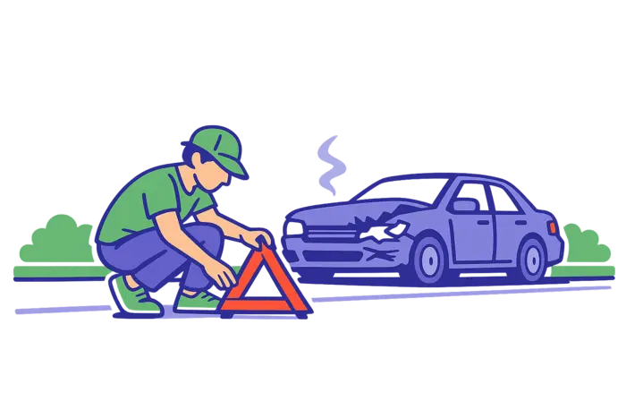
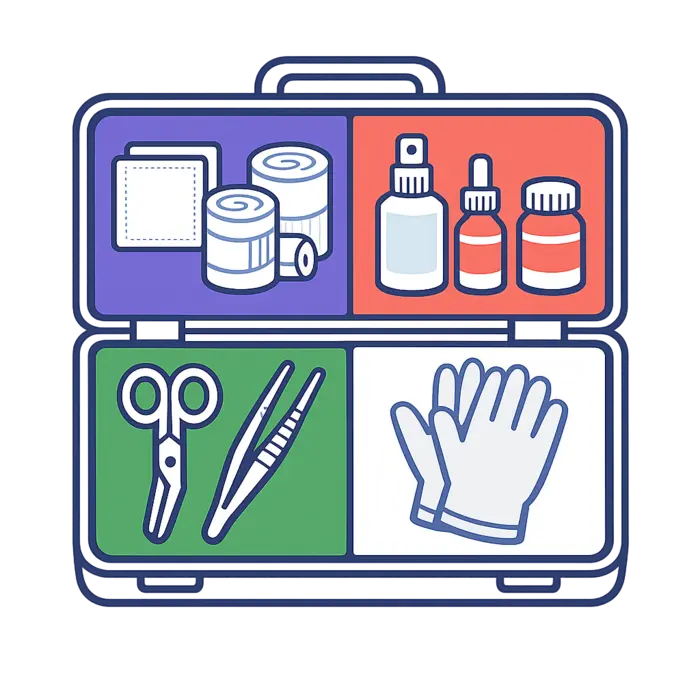
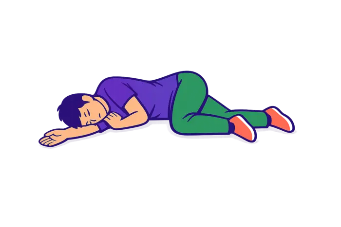
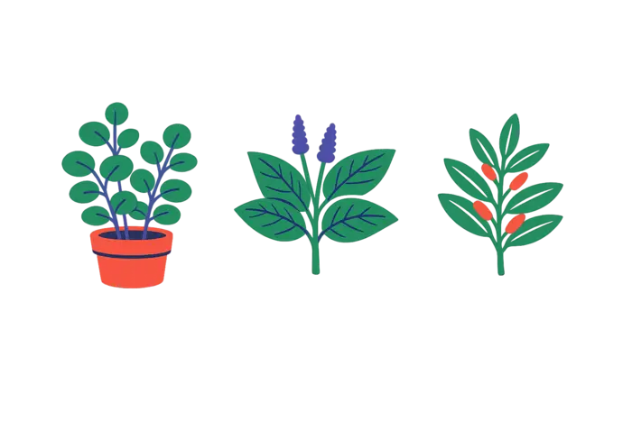

Primeros Auxilios · 6° de Secundaria
Los Primeros Auxilios son el conjunto de acciones que se realizan de forma inmediata a una persona accidentada o que enferma de repente, hasta que llega la ayuda médica profesional.
No reemplazan al médico — su función es asegurar la supervivencia y evitar que las lesiones empeoren mientras llega esa ayuda.
En Bolivia, la atención a la salud integra dos visiones que conviven: la medicina académica, basada en tecnología y evidencia científica, y la medicina tradicional ancestral, reconocida por la Constitución. Saber cuándo usar cada una, y cómo actuar frente a una emergencia, es una competencia cívica fundamental.
Ves un accidente de tránsito grave, con heridos en medio de la carretera. Tu instinto grita "¡corre a ayudarlos!" — pero la regla número uno de primeros auxilios dice que, si hacés eso sin evaluar la escena, podrías convertirte en una segunda víctima. ¿Por qué el heroísmo sin técnica es peligroso?
Cuando alguien se quema en la cocina, la "sabiduría popular" sugiere poner pasta dental, aceite o mantequilla. Biológicamente es lo peor que se puede hacer. ¿Por qué seguimos repitiendo remedios caseros que la ciencia ya desmintió?
En medicina de emergencias se dice que la diferencia entre la vida y la muerte se define en los primeros 60 minutos tras el accidente. ¿Qué ocurre en el cuerpo durante esa hora que la hace tan valiosa?
Vas a encontrar las respuestas a lo largo de este recorrido.

Hacer seguro el lugar antes de tocar a la víctima. Si es un choque, colocar el triángulo de seguridad; si hay fuego, cortar el gas; si es electrocución, bajar la palanca. Premisa: "primero yo, segundo yo, tercero yo" — si el socorrista se accidenta, ya no hay quién ayude.
Llamar a los servicios de emergencia de Bolivia: Bomberos 119 · Policía 110 · Ambulancias 160/165. Dar datos precisos: qué pasó, dónde (referencias), cuántos heridos y su estado. Nunca colgar primero.
Recién ahora se atiende a la víctima, aplicando la valoración ABC: Airway (vía aérea permeable), Breathing (¿respira? ver, oír, sentir), Circulation (¿tiene pulso? ¿hay hemorragias graves?).

Tocá cada categoría para ver qué contiene. Debe guardarse en un lugar fresco, seco y conocido por todos, pero lejos del alcance de los niños.

Si una persona no reacciona pero sí respira, y estás solo, colocala de costado: brazo de abajo extendido hacia adelante sirviendo de apoyo a la cabeza, y la pierna de arriba flexionada en la rodilla, apoyada en el suelo. Esto evita que el cuerpo ruede y mantiene la vía aérea libre mientras llega la ayuda.
Tocá una escena para vivir el caso y decidir qué harías.
Bolivia reconoce legalmente, mediante la Ley 459, la Medicina Tradicional Ancestral. Se basa en una cosmovisión holística: el equilibrio entre cuerpo, mente y naturaleza.

Usada para afecciones respiratorias.
Cicatrizante y antiinflamatorio.
Digestivo y usado tradicionalmente para el mal de altura.
Es la medicina alopática o científica, basada en evidencia y tecnología. Combina la Anamnesis (entrevista clínica al paciente) con el Examen Físico (palpación, auscultación de corazón y pulmones).
Tocá cada término para ver su definición.